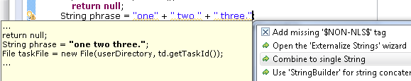

Note to load the SWT GTK3 libraries, you must set an environment variable SWT_GTK3 prior to starting Eclipse. (ex. export SWT_GTK3=1)



For the sake of code readability, JDT expects null annotations of an overridden
method to be repeated in overriding methods. In the following example the analysis
normally complains that arg is not annotated in ClientClass,
which means, this class doesn't formally conform to the contract of its super-interface.

Starting with 4.3M4 this behavior can be changed by selecting the option Inherit null annotations.

In this new mode the analysis implicitly fills in all missing annotations in overriding methods and uses the annotations from the overridden method. In the above example the error will go away, and analysis concludes that the code is actually safe, which is likely when the contract had already been defined in the javadoc comment and the implementor actually obliges to that contract. If, on the other hand, the implementation does not comply with the inherited specification, new errors will be reported as shown below.

If inheritance of null annotations encounters any ambiguity or conflict the analysis falls back to requiring explicit annotations.
Generally, this analysis looks for close() method calls
directly on a resource (any value of type Closeable).
However, in order to reduce boilerplate exception handling, several libraries
are providing methods like closeQuietly(Closeable).
Previously, the analysis would complain about the missing call to close()
as shown below:

This warning is not relevant and will no longer be reported. To achieve this, JDT now hardcodes a (short) white list of functions that are known to safely close a given resource.

If a package providing the type is available but the package is not exported by its plug-in, a quick fix will offer to fix the providing plug-in's manifest. Only plug-ins in the workspace can be modified this way.